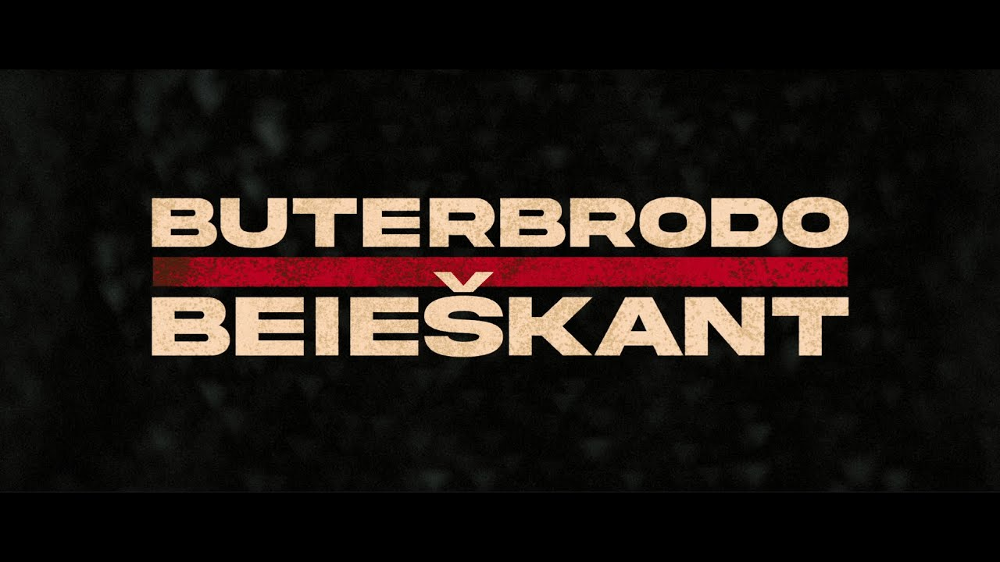
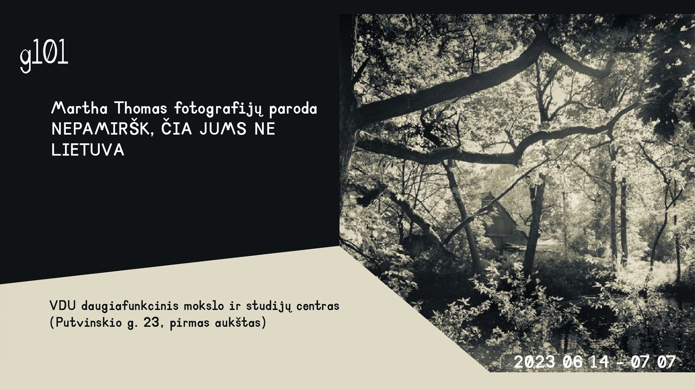

Kauno aviacijos šventė 2023
Audiovizualinė instaliacija „Besoties kultūra“. Baigiamojo bakalauro darbo dokumentacija
Reklama. Teatras „Jovaras“. Spektaklis „Trys Katinai“
Projektas „Pridainuojam Europą“. VDU akademinis choras „Vivere cantus“

„Netflix“ kriminalinio trilerio parodija „Buterbrodo beieškant“
Dokumentinis atostogų filmas „Egiptas 2023“
Animacija / reklama skirta viešajam transportui
Video reportažas „Metų švietėjas 2022“
„Industry“. Eksperimentas su dirbtinio intelekto įrankiais
T-factor seminaras. Mick Finch and Adam Thorpe. Euston Stories
Kelios žemėlapių animacijos. LRT laida „Stop juosta“

Martha Thomas fotografijų paroda „Nepamiršk, čia jums ne Lietuva“. Dokumentacija